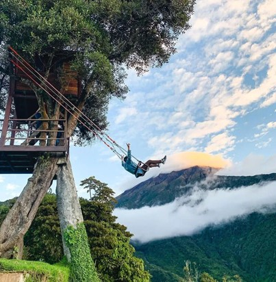
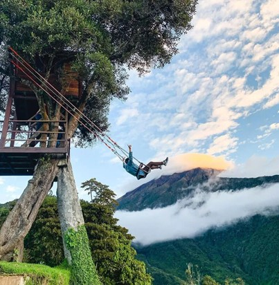
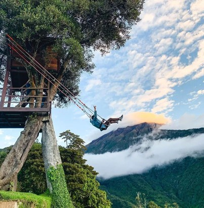
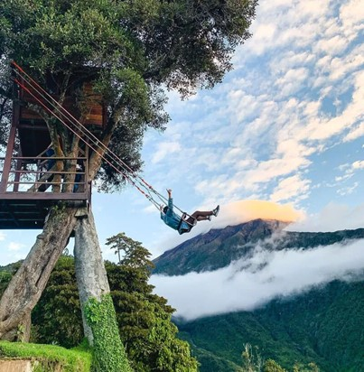

Nos alegra que hayas elegido confiar en nosotros. Hoy tendrás la oportunidad de unirte a nuestro emocionante recorrido y descubrir todo lo que Baños de Agua Santa tiene para ofrecer.
Este sitio es conocido por su belleza natural, aguas termales y actividades turísticas para todos los gustos. Baños de agua santa se ubica en la provincia de Tungurahua. Limita:
Es un sitio ubicado en la comunidad Santa Rosa de Runtún, a 20 minutos de la ciudad de Baños. Allí podrás encontrar columpios extremos, destacando los mega columpios de 40 metros y 60 metros de péndulo, conocidos como "la Bella" y "la Bestia", respectivamente. Son considerados unos de los columpios más extremos de la ciudad de Baños.
Otro lugar ideal para realizar actividades extremas en el área es Puntzan Canopy. Allí podrás realizar actividades como canopy o canyoning, las cuales son características principalmente en el descenso de barrancos. La actividad consiste en superar los cambios del recorrido del río, ya sea caminando, deslizándote en toboganes de roca o rapelando cascadas con ayuda de una cuerda fija. Este lugar se encuentra ubicado en San Antonio de Puntzan, Km 5 vía a Runtún. En Baños, esta actividad generalmente se realiza también en otras cascadas como la Chamana, San Jorge, Río Blanco y Cashaurco.
El Mega Parque de Aventura Río Blanco es un parque de actividades de aventura donde puedes realizar Zipline, un descenso por cables de acero lleno de adrenalina. Los cables tienen entre 550 y 700 metros de longitud y conectan dos puntos de montañas opuestas. El Mega Parque de Aventura Río Blanco está ubicado en Río Blanco, una comunidad del cantón Baños, a 20 minutos de Baños de Agua Santa, en la vía al Puyo.
Otra de las actividades que se puede realizar en Baños es el rafting o balsismo, un deporte acuático que se practica en equipo sobre ríos caudalosos, también llamados rápidos. Se requiere una balsa y equipos profesionales. En la zona de Baños, este deporte se practica en el río Pastaza, en el sector oriental de la ciudad, partiendo desde San Francisco o desde el sector de La Penal (Río Negro). Los paisajes selváticos que se pueden apreciar al realizar este deporte en el río Pastaza son únicos.
Otra opción que tienes en Baños es realizar un vuelo en parapente, una experiencia emocionante y maravillosa que ofrece increíbles vistas de la selva desde lo alto. Baños es la puerta de entrada a la Amazonía ecuatoriana y está cerca del volcán Tungurahua, lo que permite disfrutar de paisajes impresionantes al volar en parapente. Existen agencias turísticas en la ciudad que ofrecen este tipo de tours, incluyendo vuelos en tándem con pilotos e instructores calificados, sin necesidad de experiencia previa.
Una de las cascadas más conocidas de Baños es El Pailón del Diablo, ubicada a 17 kilómetros de la ciudad de Baños de Agua Santa, específicamente en la parroquia de Río Verde. También conocida como Cascada Río Verde, tiene una altura de 80 metros y una profundidad de 20 metros. Para llegar a esta cascada, se puede seguir senderos establecidos con aproximadamente una hora de caminata por la ruta larga o 30 minutos por la ruta corta.
El puenting o puentismo es una actividad en la cual una persona se lanza al vacío desde la altura que ofrece un puente. La caída libre dura unos segundos y luego , dependiendo de la altura, se experimenta un balanceo pendular. Esta actividad se practica en los puentes de San Francisco, ubicado frente al Terminal Terrestre, y en Río Blanco, vía al Puyo, a 2 km más abajo de la cascada de Agoyán.
Animal Park es un parque temático donde los niños pueden interactuar con una colección de aproximadamente 250 especies de animales. El parque incluye fauna autóctona, representativa de otras partes del mundo y fauna silvestre, como aves, búfalos africanos, vacas miniatura, caballos pura sangre, venados de cola blanca y leones africanos.
La fábrica de chocolates es un lugar diseñado para niños en Baños de Agua Santa, donde pueden disfrutar de una cocina interactiva y divertida. El lugar cuenta con una chocolatería, heladería, pastelería y cafetería, ofreciendo momentos divertidos mientras aprenden sobre el proceso de fabricación de chocolate.
El Bosque Encantado es un parque temático medieval en Baños que ofrece atracciones para todas las edades. Con 4.000 metros cuadrados, podrás disfrutar de una experiencia única en medio de un bosque antiguo, con construcciones fuera de serie y jardines exóticos que te transportarán a otro mundo.
La Aldea de los Duendes es un paseo educativo que fomenta la conciencia ecológica. Los visitantes pueden explorar el mundo mágico de seres como duendes, gnomos, hadas y elfos, considerados los primeros ecologistas según la mitología. Este lugar ofrece una experiencia única en contacto con la naturaleza y la magia.
PiQchur es un fotoparque temático de paisajes, escenarios y efectos especiales, ideal para los amantes de la fotografía creativa. Ubicado en el sector de Illuchi – Las Antenas, ofrece un espacio amplio para disfrutar y capturar momentos únicos en un entorno natural y espectacular.
La Basílica de Baños es un santuario en honor a Nuestra Señora de la Virgen del Rosario de Agua Santa, patrona de la ciudad. Este templo de estilo gótico moderado empezó a ser construido en 1904 por Tomás Halflants, párroco de la ciudad en aquel entonces, y fue culminado en 1944 por Fray Sebastián Acosta.
El volcán Tungurahua tiene una altura de 5.023 msnm y un diámetro en su base de 14 km. Este volcán activo es la décima montaña más alta del país y puede ser escalado hasta su cima. Si deseas realizar el ascenso, deberás pernoctar en el refugio y levantarte en la madrugada del día siguiente para emprender la caminata hacia la cima.
Dinosaurios Park es un parque de diversiones temático de dinosaurios en Baños de Agua Santa. Cuenta con un sendero de dinosaurios en ambiente selvático, fósiles reales y réplicas en realidad aumentada. Además, Dinosaurios Park ofrece shows en vivo, un restaurante temático y una dinotienda, proporcionando entretenimiento educativo para toda la familia.
Las Manos de Dios se encuentran dentro del Rancho Ojos del Volcán, ubicado a 2.700 msnm. Estas impresionantes manos emergen de la cima de un espectacular mirador para sostener un puente de madera desde donde podrás disfrutar de los paisajes de Baños y el volcán Tungurahua como telón de fondo.
La Casa del Árbol se encuentra en las faldas del volcán Tungurahua, a 2.660 metros sobre el nivel del mar. Es conocida por el famoso columpio del Fin del Mundo, un atractivo turístico donde puedes columpiarte sobre una pendiente pronunciada mientras disfrutas de impresionantes vistas del volcán y su actividad volcánica.
Eco Zoológico de San Martín es un centro de manejo de fauna silvestre donde podrás observar una amplia variedad de animales, incluidas especies en peligro de extinción como el oso de anteojos y el oso andino. Con una colección de 180 animales distribuidos en 48 especies, el zoológico también cuenta con una sección de animales exóticos como tigres de Bengala blanco, faisanes, pericos australianos, emús y flamencos.
Wanderlust Agency es una agencia de viajes especializada en ofrecer experiencias únicas en Baños de Agua Santa. Con una amplia gama de tours y actividades, incluyendo aventuras extremas, parques temáticos, y sitios turísticos emblemáticos como la Basílica de Baños y las Manos de Dios, Wanderlust Agency te invita a explorar y disfrutar de todos los rincones que esta encantadora ciudad tiene para ofrecer.